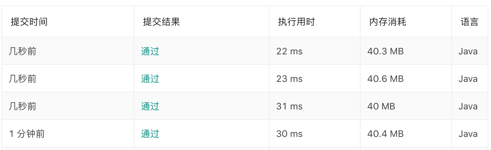

JSON反序列化乱序的问题
What
将Object 转成JSON时，会出现key值的顺序与原顺序不一致的情况（新的顺序按照字母序重新排序）
Why
原因在于HashMap，当用fastjson反序列化时，会使用HashMap。而HashMap底层会根据map中key的hashcode和equals重新排序。
How
使用LinkedHashMap替换HashMap。
JSONObject jsonObj = new JSONObject(true);
Map m= jsonObj.parseObject(json, LinkedHashMap.class);
这个方法可以保证第一层的map按照原顺序呗反序列化。想要递归所有层都按照原顺序需要使用
HashMap m=JSON.parseObject(json,LinkedHashMap.class,Feature.OrderedField)；
PS
Q: jackson 会乱序吗？
A: 不会
参考资料
https://github.com/alibaba/fastjson/issues/954
https://blog.csdn.net/yj1499945/article/details/78260650
Java中的代理模式
1. 静态代理和动态代理
本章节参考了https://www.ibm.com/developerworks/cn/java/j-lo-proxy-pattern/
1.1. 定义
静态代理和动态代理指的是实现代理模式的方式。静态模式意思是所有的代码是静态写好的。而动态代理则相对，部分代码是动态生成的。在动态代理中还分为JDK动态代理和CGLib动态代理。
1.2. 关键实现
1.2.1. 静态代理
静态代理是基于接口实现的，他要求真实类和代理类实现同样的接口。
public interface IDBQuery {
String request();
}
public class DBQuery implements IDBQuery{
public DBQuery(){
try{
Thread.sleep(1000);//假设数据库连接等耗时操作
}catch(InterruptedException ex){
ex.printStackTrace();
}
}
@Override
public String request() {
// TODO Auto-generated method stub
return "request string";
}
}
public class DBQueryProxy implements IDBQuery{
private DBQuery real = null;
@Override
public String request() {
// TODO Auto-generated method stub
//在真正需要的时候才能创建真实对象，创建过程可能很慢
if(real==null){
real = new DBQuery();
}//在多线程环境下，这里返回一个虚假类，类似于 Future 模式
return real.request();
}
}
public class Main {
public static void main(String[] args){
IDBQuery q = new DBQueryProxy(); //使用代里
q.request(); //在真正使用时才创建真实对象
}
}
1.2.2. JDK代理
当使用JDK代理时，一个最直观的变化就是代理类不需要和真实类实现同一个接口了。取而代之的是代理类实现了InvocationHandler，并Override了invoke方法。在方法里可以统一对实现方法做处理（方法调用前，方法调用后）。
import java.lang.reflect.InvocationHandler;
import java.lang.reflect.Method;
public class DBQueryHandler implements InvocationHandler{
IDBQuery realQuery = null;//定义主题接口
@Override
public Object invoke(Object proxy, Method method, Object[] args)
throws Throwable {
// TODO Auto-generated method stub
//如果第一次调用，生成真实主题
if(realQuery == null){
realQuery = new DBQuery();
}
//method.invoke(target, args); 执行调用的方法。
//返回真实主题完成实际的操作
return realQuery.request();
}
public static IDBQuery createProxy(){
IDBQuery proxy = (IDBQuery)Proxy.newProxyInstance(ClassLoader.getSystemClassLoader(), new Class[]{IDBQuery.class}, new DBQueryHandler()); // 注意，生成的代理类实例被强转为IDBQuery
return proxy;
}
}
1.2.3. CGLib代理
CGLib一个直观的最大的特点就是真实类无需实现接口（当然实现了也没关系）。
接口类
public interface BookProxy {
public void addBook();
}
实现类
//该类并没有申明 BookProxy 接口
public class BookProxyImpl {
public void addBook() {
System.out.println("增加图书的普通方法...");
}
}
代理类
import java.lang.reflect.Method;
import net.sf.cglib.proxy.Enhancer;
import net.sf.cglib.proxy.MethodInterceptor;
import net.sf.cglib.proxy.MethodProxy;
public class BookProxyLib implements MethodInterceptor {
private Object target;
/**
* 创建代理对象
*
* @param target
* @return
*/
public Object getInstance(Object target) {
this.target = target;
Enhancer enhancer = new Enhancer();
enhancer.setSuperclass(this.target.getClass());
// 回调方法
enhancer.setCallback(this);
// 创建代理对象
return enhancer.create();
}
@Override
// 回调方法
public Object intercept(Object obj, Method method, Object[] args,
MethodProxy proxy) throws Throwable {
System.out.println("事物开始");
proxy.invokeSuper(obj, args);
System.out.println("事物结束");
return null;
}
}
调用方法
public class TestCglib {
public static void main(String[] args) {
BookProxyLib cglib=new BookProxyLib();
BookProxyImpl bookCglib=(BookProxyImpl)cglib.getInstance(new BookProxyImpl());
bookCglib.addBook(); //可以看到BookProxyLib并没有声明BookProxy接口，但是仍然可以调用addBook方法
}
}
1.3. 区别和共同点
静态代理是通过在代码中显式定义一个业务实现类一个代理，在代理类中对同名的业务方法进行包装，用户通过代理类调用被包装过的业务方法；
JDK动态代理是通过接口中的方法名，在动态生成的代理类中调用业务实现类的同名方法；
CGlib动态代理是通过继承业务类，生成的动态代理类是业务类的子类，通过重写业务方法进行代理；
https://blog.csdn.net/neosmith/article/details/51072840
2. 实际应用场景举例
todo:没有理解cglib不用真实类实现接口的意义。因为真实类没有实现接口，但是暴露了public的方法。这和直接调用有啥区别？
另外cglib的试用场景，真实类没有实现的接口意义何在？如果没有接口来规范统一的调用逻辑，例如一堆的实现类实现了A接口，因此必须实现A接口中定义的B方法。这样才有意义吧？
查看spring源码，了解spring中，cglib的使用方法，来解答上述疑问。
代理模式的意义
- 有代理，便于解耦
- 静态代理太麻烦，每个都要
- JDK代理受限于要实现接口
- CGLib不需要实现接口，看上去无法统一接口的方法，但是可能是用在一些common的方法，例如Object的方法。用在类创建时刻。
- 另外让方法运行只是最基本的，代理模式的最大用途是管理原方法的运行前，后，时（切面，AOP）。
3. Spring AOP和动态代理
4. OC中的动态代理模式浅谈
5. CGLib和JDK代理的性能对比
Java序列化的那些事
1. 什么是序列化和反序列化
（1）Java序列化是指把Java对象转换为字节序列的过程，而Java反序列化是指把字节序列恢复为Java对象的过程；
（2）序列化：对象序列化的最主要的用处就是在传递和保存对象的时候，保证对象的完整性和可传递性。序列化是把对象转换成有序字节流，以便在网络上传输或者保存在本地文件中。序列化后的字节流保存了Java对象的状态以及相关的描述信息。序列化机制的核心作用就是对象状态的保存与重建。
（3）反序列化：客户端从文件中或网络上获得序列化后的对象字节流后，根据字节流中所保存的对象状态及描述信息，通过反序列化重建对象。
（4）本质上讲，序列化就是把实体对象状态按照一定的格式写入到有序字节流，反序列化就是从有序字节流重建对象，恢复对象状态。
2、为什么需要序列化与反序列化
我们知道，当两个进程进行远程通信时，可以相互发送各种类型的数据，包括文本、图片、音频、视频等， 而这些数据都会以二进制序列的形式在网络上传送。
那么当两个Java进程进行通信时，能否实现进程间的对象传送呢？答案是可以的！如何做到呢？这就需要Java序列化与反序列化了！
换句话说，一方面，发送方需要把这个Java对象转换为字节序列，然后在网络上传送；另一方面，接收方需要从字节序列中恢复出Java对象。
当我们明晰了为什么需要Java序列化和反序列化后，我们很自然地会想Java序列化的好处。其好处一是实现了数据的持久化，通过序列化可以把数据永久地保存到硬盘上（通常存放在文件里），二是，利用序列化实现远程通信，即在网络上传送对象的字节序列。
总的来说可以归结为以下几点：
（1）永久性保存对象，保存对象的字节序列到本地文件或者数据库中；
（2）通过序列化以字节流的形式使对象在网络中进行传递和接收；
（3）通过序列化在进程间传递对象；
3、实现Java对象序列化与反序列化的方法
假定一个User类，它的对象需要序列化，可以有如下三种方法：
（1）若User类仅仅实现了Serializable接口，则可以按照以下方式进行序列化和反序列化
ObjectOutputStream采用默认的序列化方式，对User对象的非transient的实例变量进行序列化。
ObjcetInputStream采用默认的反序列化方式，对对User对象的非transient的实例变量进行反序列化。
（2）若User类仅仅实现了Serializable接口，并且还定义了readObject(ObjectInputStream in)和writeObject(ObjectOutputSteam out)，则采用以下方式进行序列化与反序列化。
ObjectOutputStream调用User对象的writeObject(ObjectOutputStream out)的方法进行序列化。
ObjectInputStream会调用User对象的readObject(ObjectInputStream in)的方法进行反序列化。
（3）若User类实现了Externalnalizable接口，且User类必须实现readExternal(ObjectInput in)和writeExternal(ObjectOutput out)方法，则按照以下方式进行序列化与反序列化。
ObjectOutputStream调用User对象的writeExternal(ObjectOutput out))的方法进行序列化。
ObjectInputStream会调用User对象的readExternal(ObjectInput in)的方法进行反序列化。
4. serialVersionUID
序列化运行时使用一个称为 serialVersionUID 的版本号与每个可序列化类相关联，该序列号在反序列化过程中用于验证序列化对象的发送者和接收者是否为该对象加载了与序列化兼容的类。为它赋予明确的值。显式地定义serialVersionUID有两种用途：
在某些场合，希望类的不同版本对序列化兼容，因此需要确保类的不同版本具有相同的serialVersionUID；
在某些场合，不希望类的不同版本对序列化兼容，因此需要确保类的不同版本具有不同的serialVersionUID。
参考资料
原文链接：https://blog.csdn.net/xlgen157387/article/details/79840134
https://blog.csdn.net/u014750606/article/details/80040130
一道LeetCode线程题引出Java线程协作的经典案例
1. 题目
1115. 交替打印FooBar
我们提供一个类：
class FooBar {
public void foo() {
for (int i = 0; i < n; i++) {
print("foo");
}
}
public void bar() {
for (int i = 0; i < n; i++) {
print("bar");
}
}
}
两个不同的线程将会共用一个 FooBar 实例。其中一个线程将会调用 foo() 方法，另一个线程将会调用 bar() 方法。
请设计修改程序，以确保 "foobar" 被输出 n 次。
示例 1:
输入: n = 1
输出: "foobar"
解释: 这里有两个线程被异步启动。其中一个调用 foo() 方法, 另一个调用 bar() 方法，"foobar" 将被输出一次。
示例 2:
输入: n = 2
输出: "foobarfoobar"
解释: "foobar" 将被输出两次。
来源：力扣（LeetCode）
链接：https://leetcode-cn.com/problems/print-foobar-alternately
著作权归领扣网络所有。商业转载请联系官方授权，非商业转载请注明出处。
2. 分析
本题有两个要求
- 顺序性，即foo要在bar之前打印，需要考虑先执行print bar的情况。
- 交替性，foo和bar需要轮流打印。
2.1. 方案一（基于volatile）
用一个变量来标记当前打印的是foo还是bar。这样就知道下一个操作需要打印foo还是bar。这个变量需要在线程间进行共享。共享没有问题，FooBar内的变量对同一个对象是可以访问的。但是需要能够及时同步。因此我们需要一个volatile变量。
1.0版本:
class FooBar {
private int n;
volatile boolean flag = true;
public FooBar(int n) {
this.n = n;
}
public void foo(Runnable printFoo) throws InterruptedException {
for (int i = 0; i < n; i++) {
while (!flag){
}
// printFoo.run() outputs "foo". Do not change or remove this line.
printFoo.run();
flag = false;
}
}
public void bar(Runnable printBar) throws InterruptedException {
for (int i = 0; i < n; i++) {
// printBar.run() outputs "bar". Do not change or remove this line.
while (flag){
}
printBar.run();
flag = true;
}
}
}

提交，超时了。为啥呢？
考虑CPU单核的情况，while (flag){}如果是bar线程先运行，将会不停执行while。foo线程无法抢占时间片，自然无法开始第一步print foo了。在多核环境下，虽然不会造成另一线程无法抢占时间片的问题，但是while循环是很耗时的，占用大量CPU资源，这也会使得运行时间变长而超时。
基于这样的分析，修改一下，增加Thread.sleep()，每次循环的时候，休眠一会儿。
2.0版本:
class FooBar {
private int n;
volatile boolean flag = true;
public FooBar(int n) {
this.n = n;
}
public void foo(Runnable printFoo) throws InterruptedException {
for (int i = 0; i < n; i++) {
while (!flag){
Thread.sleep(20);
}
// printFoo.run() outputs "foo". Do not change or remove this line.
printFoo.run();
flag = false;
}
}
public void bar(Runnable printBar) throws InterruptedException {
for (int i = 0; i < n; i++) {
// printBar.run() outputs "bar". Do not change or remove this line.
while (flag){
Thread.sleep(20);
}
printBar.run();
flag = true;
}
}
}
提交，进步了一点。还是超时。

我们已经把休眠时间调整的很小了（20ms），希望程序可以快点切换到下一个打印。我们或许可以通过继续把休眠时间调整的更小来通过这道题，但是我们有一个更好的方法。Thread.yield()
3.0版本来了:
class FooBar {
private int n;
volatile boolean flag = true;
public FooBar(int n) {
this.n = n;
}
public void foo(Runnable printFoo) throws InterruptedException {
for (int i = 0; i < n; i++) {
while (!flag){
Thread.yield();
}
// printFoo.run() outputs "foo". Do not change or remove this line.
printFoo.run();
flag = false;
}
}
public void bar(Runnable printBar) throws InterruptedException {
for (int i = 0; i < n; i++) {
// printBar.run() outputs "bar". Do not change or remove this line.
while (flag){
Thread.yield();
}
printBar.run();
flag = true;
}
}
}

通过了！！！
摘抄自LeetCode评论：https://leetcode-cn.com/problems/print-foobar-alternately/solution/xian-cheng-ping-zhang-de-wen-ti-yi-ban-you-san-cho/
while循环是比较耗费性能的，可能会导致执行结果超时。可以通过Thread.yield进一步控制线程的执行，而非比较粗力度的循环。当某个线程调用yield()方法时，就会从运行状态转换到就绪状态后，CPU从就绪状态线程队列中只会选择与该线程优先级相同或者更高优先级的线程去执行。总之加上Thread.yield性能会更高一点，因此用时会更少
什么是Thread.yield()?
摘抄自：https://www.cnblogs.com/java-spring/p/8309931.html
Java线程中的Thread.yield( )方法，译为线程让步。顾名思义，就是说当一个线程使用了这个方法之后，它就会把自己CPU执行的时间让掉，
让自己或者其它的线程运行，注意是让自己或者其他线程运行，并不是单纯的让给其他线程。
yield()的作用是让步。它能让当前线程由“运行状态”进入到“就绪状态”，从而让其它具有相同优先级的等待线程获取执行权；但是，并不能保证在当前线程调用yield()之后，其它具有相同优先级的线程就一定能获得执行权；也有可能是当前线程又进入到“运行状态”继续运行！
举个例子：一帮朋友在排队上公交车，轮到Yield的时候，他突然说：我不想先上去了，咱们大家来竞赛上公交车。然后所有人就一块冲向公交车，
有可能是其他人先上车了，也有可能是Yield先上车了。
但是线程是有优先级的，优先级越高的人，就一定能第一个上车吗？这是不一定的，优先级高的人仅仅只是第一个上车的概率大了一点而已，
最终第一个上车的，也有可能是优先级最低的人。并且所谓的优先级执行，是在大量执行次数中才能体现出来的。
2.2 方案二 Semaphore
Semaphore
https://blog.csdn.net/hanchao5272/article/details/79780045
基于Semaphore的代码如下:
class FooBar {
private int n;
private Semaphore semaphore = new Semaphore(1);
private volatile boolean foo = false;
public FooBar(int n) {
this.n = n;
}
public void foo(Runnable printFoo) throws InterruptedException {
for (int i = 0; i < n; i++) {
semaphore.acquire();
// printFoo.run() outputs "foo". Do not change or remove this line.
printFoo.run();
foo = true;
}
}
public void bar(Runnable printBar) throws InterruptedException {
for (int i = 0; i < n; i++) {
while (!foo) {
}
// printBar.run() outputs "bar". Do not change or remove this line.
printBar.run();
foo = false;
semaphore.release();
}
}
}
作者：san-mu-32
链接：https://leetcode-cn.com/problems/print-foobar-alternately/solution/tong-guo-yi-ge-xin-hao-liang-kong-zhi-foohe-barde-/
来源：力扣（LeetCode）
著作权归作者所有。商业转载请联系作者获得授权，非商业转载请注明出处。

涉及多线程，运行时间并不稳定。和方案一类似，在while循环中加入Thread.yield()，速度有一定提升。

2.3. 方案三 notify && wait
https://www.jianshu.com/p/1dafbf42cc54
class FooBar {
private int n;
private volatile boolean isFoo;
public FooBar(int n) {
this.n = n;
}
public synchronized void foo(Runnable printFoo) throws InterruptedException {
for (int i = 0; i < n; i++) {
// synchronized (lock) {
// printFoo.run() outputs "foo". Do not change or remove this line.
printFoo.run();
isFoo = true;
this.notify();
if (i < n - 1) {
this.wait();
}
// }
}
}
public synchronized void bar(Runnable printBar) throws InterruptedException {
if (!isFoo) {
this.wait();
}
for (int i = 0; i < n; i++) {
// synchronized (lock) {
// printBar.run() outputs "bar". Do not change or remove this line.
printBar.run();
this.notify();
if (i < n - 1) {
this.wait();
}
// }
}
}
}

运行时间不稳定，应该是LeetCode的问题。
2.4. 方案四 CyclicBarrier
https://www.jianshu.com/p/333fd8faa56e
class FooBar {
private int n;
public FooBar(int n) {
this.n = n;
}
CyclicBarrier cb = new CyclicBarrier(2);
volatile boolean fin = true;
public void foo(Runnable printFoo) throws InterruptedException {
for (int i = 0; i < n; i++) {
while(!fin);
printFoo.run();
fin = false;
try {
cb.await();
} catch (BrokenBarrierException e) {
}
}
}
public void bar(Runnable printBar) throws InterruptedException {
for (int i = 0; i < n; i++) {
try {
cb.await();
} catch (BrokenBarrierException e) {
}
printBar.run();
fin = true;
}
}
}
作者：KevinBauer
链接：https://leetcode-cn.com/problems/print-foobar-alternately/solution/java-bing-fa-gong-ju-lei-da-lian-bing-by-kevinbaue/
来源：力扣（LeetCode）
著作权归作者所有。商业转载请联系作者获得授权，非商业转载请注明出处。
2.5. 方案五 CyclicBarrier + CountdownLatch
CyclicBarrier用于保证每一轮的foobar的打印。CountdownLatch用于保证单轮内，先打印foo，再打印bar。
import java.util.concurrent.CountDownLatch;
import java.util.concurrent.CyclicBarrier;
class FooBar {
private int n;
private CountDownLatch a;
private CyclicBarrier barrier;// 使用CyclicBarrier保证任务按组执行
public FooBar(int n) {
this.n = n;
a = new CountDownLatch(1);
barrier = new CyclicBarrier(2);// 保证每组内有两个任务
}
public void foo(Runnable printFoo) throws InterruptedException {
try {
for (int i = 0; i < n; i++) {
printFoo.run();
a.countDown();// printFoo方法完成调用countDown
barrier.await();// 等待printBar方法执行完成
}
} catch(Exception e) {}
}
public void bar(Runnable printBar) throws InterruptedException {
try {
for (int i = 0; i < n; i++) {
a.await();// 等待printFoo方法先执行
printBar.run();
a = new CountDownLatch(1); // 保证下一次依旧等待printFoo方法先执行
barrier.await();// 等待printFoo方法执行完成
}
} catch(Exception e) {}
}
}
作者：bonaluo
链接：https://leetcode-cn.com/problems/print-foobar-alternately/solution/javashi-yong-yi-ge-countdownlatchhe-yi-ge-cyclicba/
来源：力扣（LeetCode）
著作权归作者所有。商业转载请联系作者获得授权，非商业转载请注明出处。
3. 总结
本题需要解决两个问题。
- 两个线程必须先后执行，
- foo线程必须保证先执行。
为了解决这两个问题，5个方案选择了不同的方案组合。主要分为无锁和有锁两种方案。
为了解决foo线程先执行的问题。有使用volatile变量和CountdownLatch两种方法。volatile变量使用的是无锁的方案。通过一个死循环，组织bar线程先运行。优点是可以快速感知状态变换，无需线程切换。缺点是资源消耗大，需要使用Thread.yield()。否则会超时。CountdownLatch采用的是有锁的方案，因此会有线程的切换，单不会大量占用系统资源。在线程占用时间长的场景体验更佳。
为了让两个线程先后执行，需要在foo线程执行后挂起线程，让bar线程运行。在bar线程运行后，再让foo线程执行。无锁方案，继续用volatile变量即可。有锁方案则可以有几种选择。Semaphore，CyclicBarrier，notify&wait，Lock。
4. 引申
在 单核 / 单CPU 的系统上使用 自旋锁 是没有意义的，因为它就一个运行线程/核心，你占着不放，那么其他线程将得不到运行，其他线程得不到运行，这个锁就不能被解锁。换句话说，在 单核 / 单CPU 系统使用 自旋锁，除了浪费点时间外没有一点好处。这时如果让这个线程（记为线程A）休眠，其他线程就得以运行，然后就可能会解锁这个 自旋锁，线程A就可能在重新被唤醒后，如愿以偿的持有锁。
在 多核 / 多CPU 的系统上，特别是大量的线程只会短时间的持有锁的时候，这时如果使用 互斥锁，在使线程睡眠和唤醒上浪费大量的时间，也许会显著降低程序的运行性能。使用 自旋锁，线程可以充分利用系统调度程序分配的时间片(经常阻塞很短的时间，不用休眠，然后马上继续它们后面的工作了)，以达到更高的处理能力和吞吐量。
从使用fastjson替换springboot框架默认的json解析工具说起
1. 为什么要用fastjson替换jackson
1.在默认情况下我们在的情况下从返回的数据是
json格式但是在{key,value}中key的值当中用默认的Jackson返还回来会忽略大小写而我们要得到得是不忽略大小写得值因此我
们需要用FastJson替代默认得Jackson
2.我们通常现在为了更快捷得创建类,使用lombok插件得@Data注解生成类得getter,setter及构造方法.jackson是不支持json格式
序列化的,但是FastJson是可以做到这一点的
————————————————
版权声明：本文为CSDN博主「Alin_林」的原创文章，遵循 CC 4.0 BY-SA 版权协议，转载请附上原文出处链接及本声明。
原文链接：https://blog.csdn.net/weixin_44828552/article/details/89511350
2. 如何替换fastjson
常见的替换方法有以下两种
2.1. 方法一
@SpringBootApplication
public class HelloWorld implement ApplicationRunner{
public static void main(String[] args){
SpringApplication.run(HelloWorld.class,args);
}
@Bean
public HttpMessageConverters fastJsonHttpMessageConverters(){
//1.定义fastJson转换器
FastJsonHttpMessageConverter fastConverter=new FastJsonHttpMessageConverter();
FastJsonConfig fastJsonConfig=new FastJsonConfig();
fastJsonConfig.setSerializerFeatures(SerialzerFeature.WriteMapNullValue, SerializerFeature.WriteNullListAsEmpty);
fastConverter.setFastJsonConfig(fastJsonConfig);
HttpMessageConverter<?> converter = fastConverter;
return new HttpMessageConverters(converter);
}
}
2.2. 方法二
@Configuration
@EnableWebMvc
public class WebConfig implements WebMvcConfigurer {
@Override
public void configureMessageConverters(List<HttpMessageConverter<?>> converters) {
FastJsonHttpMessageConverter fastJsonConverter = new FastJsonHttpMessageConverter();
FastJsonConfig config = new FastJsonConfig();
config.setCharset(Charset.forName("UTF-8"));
// config.setDateFormat("yyyy-MM-dd'T'HH:mm:ss.SSSZ");
// config.setSerializerFeatures(SerializerFeature.WriteMapNullValue);
fastJsonConverter.setFastJsonConfig(config);
List<MediaType> list = new ArrayList<>();
list.add(MediaType.APPLICATION_JSON_UTF8);
fastJsonConverter.setSupportedMediaTypes(list);
converters.add(fastJsonConverter);
}
}
3. 发散分析
3.1. Jackson的新版本
网络上搜集替换jackson的理由，其中一点是jackson不支持忽略key大小写。
该点已经在2.5.0版本中解决。
ObjectMapper objectMapper = new ObjectMapper();
objectMapper.configure(MapperFeature.ACCEPT_CASE_INSENSITIVE_PROPERTIES, true);
CarInfo info = objectMapper.readValue(data, CarInfo.class);
或在配置文件中
spring.jackson.mapper.accept_case_insensitive_properties=true
3.2. 从替换fastjson，看springboot使用json解析器的逻辑
第二节中的两种方法都涉及到同一个类的使用，那就是FastJsonHttpMessageConverter和HttpMessageConverter。
将FastJsonHttpMessageConverter 添加到系统的HttpMessageConverter列表中，实际操作就是增加了一种json的解析方法，可以解析的media type是application-json，使用的解析器就是FastJsonHttpMessageConverter。
更多阅读
1. 三种json解析工具对比
fastjson这么快老外为啥还是热衷 jackson? https://blog.csdn.net/Amen_Wu/article/details/79129020
FastJSON、Gson和Jackson性能对比和共同缺点,注意事项
https://blog.csdn.net/qq_28572235/article/details/78604846
参考资料
https://mtyurt.net/post/jackson-case-insensitive-deserialization.html
https://blog.csdn.net/weixin_44828552/article/details/89511350

Copyright © 2015 Powered by MWeb, Theme used GitHub CSS.